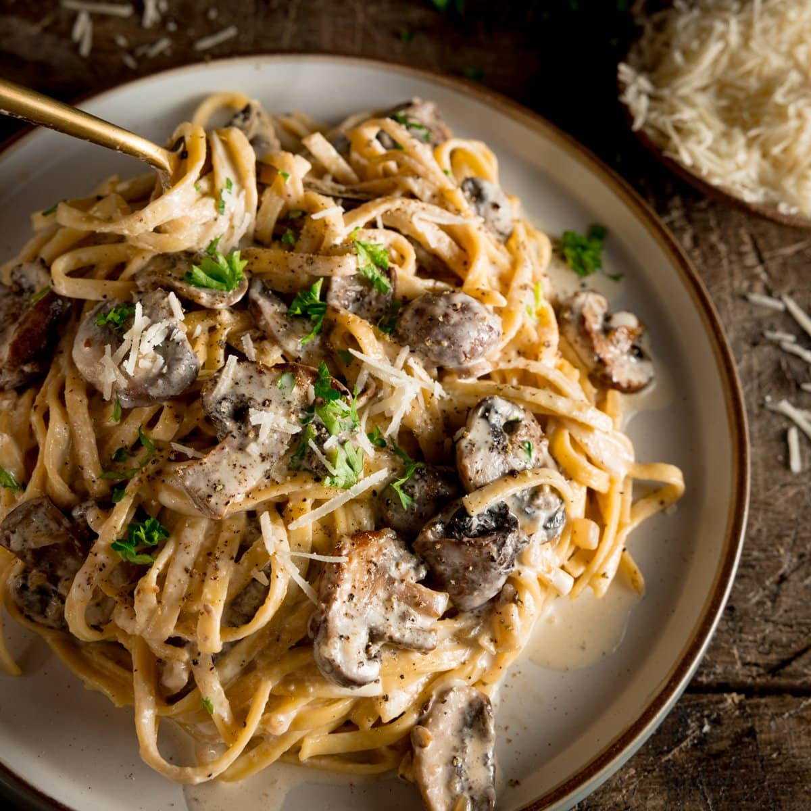

Mushroom Cream Pasta

Description
This is my favorite quick and easy pasta dish for those dinners in which you just want to have a cheap and delicious meal without working too hard.
I've found it to be very modular, so swap out any of the extras with your own, change the protein up, say hi to a stranger! It's your life.
Ingredients
- 1 lb of pasta
- 1 lb of mushrooms
- Garlic
- Onions
- Ground beef
- Olive oil
- Salt
- Pepper
- Heavy cream
- Parmesan
Steps
- Salt and boil water for the pasta, lowering to a simmer if it boils while preparing sauce.
- Add olive oil to pan, then add mushrooms.
- After a couple minutes, add onions.
- Cook until onions turn transluscent, then add garlic and beef.
- Hit the beef with a wooden spoon so it doesn't clump up while it cooks.
- Season until the ancestors tell you to stop.
- Bring water back to a boil and add pasta.
- Add heavy cream to pan, with the heat on high, letting it bubble and thicken as the pasta boils.
- Add parmesan, salt, and pepper into sauce.
- Strain pasta, mix with sauce, plate and enjoy :)